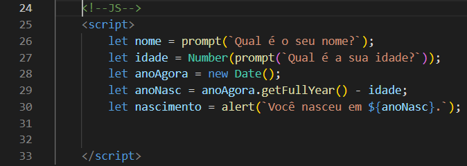
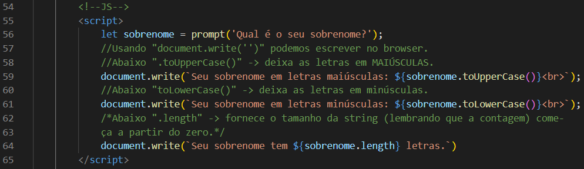
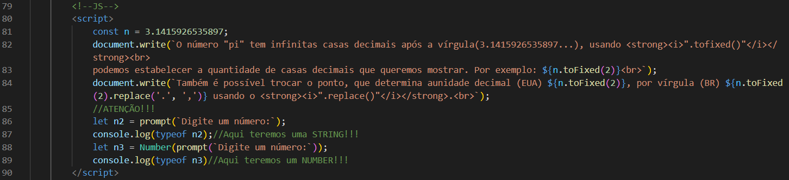

Testes de Fixação do Conteúdo
Esses testes abrangem o que foi aprendido nos módulos "A" e "B".
Guardando dados em variáveis
Abaixo será usado variáveis para guardar dados. Será feita em linguagem JavaScript.

No "script" acima temos as variáveis "nome" e "idade" que será atribuído a um valor
do tipo "string", que é fornecido pelo usuário em uma janela "prompt". Nas variáveis
abaixo é criado uma variável (anoAgora) para buscar um data (podendo ser hora, dia,
mês, ano...), no nosso caso, quero o ano atual. Atribuindo em uma nova variável
(anoNasc), tenho o ano atual, menos a idade que foi fornecida pelo usuário e, logo em
seguida é criada mais uma variável (nascimento), que rebe a subtração do ano atual,
menos a idade fornecida pelo usuário.
Tratando strings
Nesta subseção são mostrados tratamentos feitos com strings.
Lembrando! Strings são caracteres (numérico, alfanuméricos ou alfabéticos) que estão
marcados entre áspas simples (' '), duplas (" "), ou ainda, entre apóstrofos (crases),
que é conhecido como "tamplastring".

Esses são apenas algumas maneiras de tratar strings.
Tratando números
Após fazer o tratamento de variáveis strings o foco, agora, é fazer tratamento de variáveis
numéricas. Veja o código a seguir:

Atenção as explicações contigo no script acima.